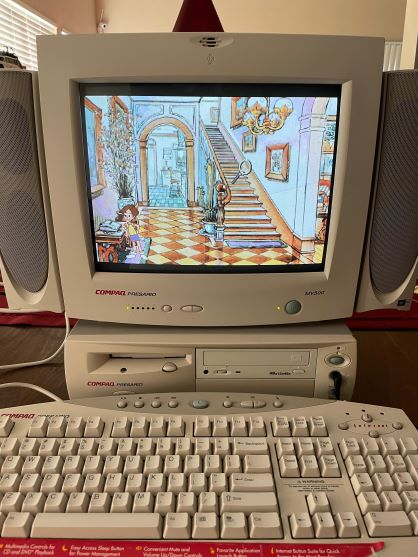

Compaq Presario
The 2001 Compaq Presario was a popular line of desktop computers aimed at home users and small businesses. These models typically featured Intel Pentium 4 processors, various RAM options, and integrated graphics, catering to everyday computing tasks like web browsing, office applications, and multimedia consumption. Known for their user-friendly design, the Presarios often included pre-installed software and a variety of connectivity options, making them versatile for various needs. The 2001 series highlighted affordability and solid performance, appealing to a broad audience during the early 2000s.